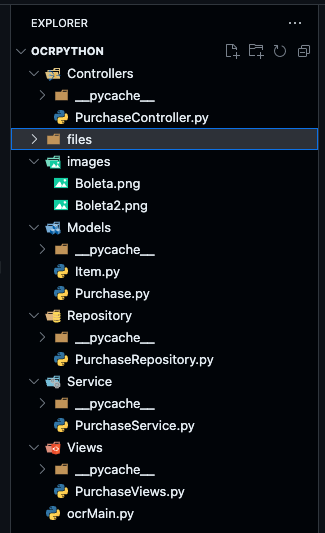
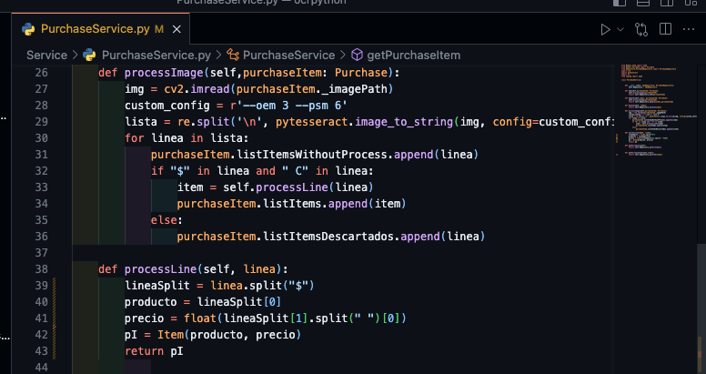

The project's goal is to learn python basics. Defining the next problem, the need to digitize a purchase ticket and manage that information. I used an OCR library to recognize the image text and be able to save the information.
I started developing a function to recognize the image text following the indications from this web page https://nanonets.com/blog/ocr-with-tesseract/. Throughout the development of this application I was researching the different Python's characteristics as a programming language, such as the variables definition, loops, functions, classes, etc.
About the next steps in developing the project, I decided to use MVC architecture, because as a web developer I'm more familiar with this architecture, so I use the MVC folder structure, one for the models, one for the views and another for the controllers.
Also a repository pattern and business layers pattern was used. The business layer owns the OCR functionality that allows us the text recognition from the purchase tickets.
This project showed me how friendly Python is, realizing that with a few lines of code you can get a functional application method. Also with the library usage it was friendly, using pip I didn't have any problem installing them, I comment this, because in the beginning this project should have been done in C# using Net Core, but I had a lot of problems installing the different libraries and it never worked and I gave up. The most complex method in the application was the OCR method, which took at least 20 minutes, while reviewing the documentation. This project was useful to practice the different programming patterns and realize their benefits.
Just to summarize, learning Python is a good decision if you want to enter the application developing world, also you will realize it is a strong tool to allow you to solve different kinds of problems.
This web pages will help you
https://docs.python-guide.org/starting/installation/
https://www.geeksforgeeks.org/python-programming-language
https://nanonets.com/blog/ocr-with-tesseract